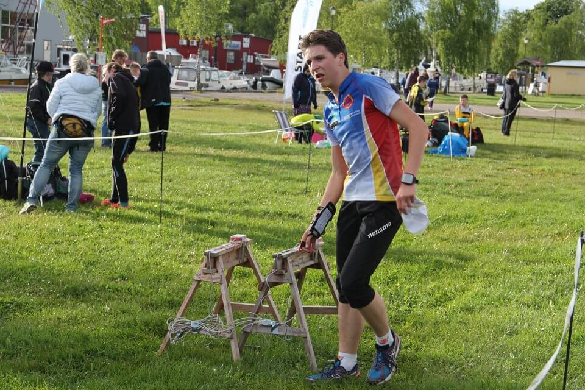

Hej och välkommen till Gnestarias!
Jag som driver och har byggt denna sida heter Johan Hagströmer. Jag går på Nyköpings Gymnasium på teknik linjen. I kursen webbutveckling så har vi fått ett projekt där vu ska bygga en egen hemisda om ett valfritt ämne. Då valde jag tilsammans med min lärare att göra en sida om Gnesta alla pizzerior. Där syftet var att sammanställa öppetider och menyer bland annat för att göra det enklare för kunder att veta vad man ska beställa t.ex.
Hela sidan är byggd av mig, men har tagit hjälp av internet och lärare/kompisar när jag stött på problem.